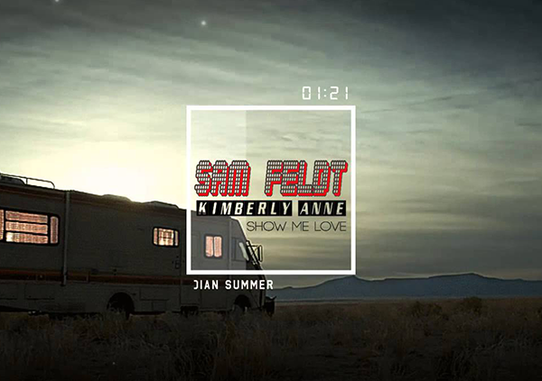
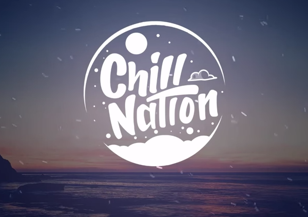

latter compositions
"It's Time" was released as the lead single from Continued Silence and It's Time, both
extended plays preceding Night Visions' release.
2010
HELL AND SILENCE
Sam Feldt ft. Kimberly Anne - Show Me Love (EDX's Indian Summer Remix)
"Radioactive" is a song recorded by American rock band Imagine Dragons for their major-label debut EP Continued Silence and later on their debut studio album, Night Visions (2012), as the opening track. "Radioactive" was
Visit the iTunes
 10k
10k

2010
HELL AND SILENCE
Sam Feldt - Show Me Love (EDX's Indian Summer Remix)
Amsterdam's Sam Feldt earned attention in Europe and then worldwide for this melodic remixes, mixtapes, and collaborations including 2014's "Bloesem" with De Hofnar and "Hot Skin" with Kav Verhouser on...
Visit the iTunes
8k
2010
HELL AND SILENCE
James Bay - Let It Go (Bearson Remix)
A soulful singer/songwinger from a small English town with a penchant for crafting moving and evocative folk-pop confections in the vein of Ed Sheeran, Foy Vance, and Ben Howard, James Bay hails from the North Hertf...
Visit the iTunes
8k
